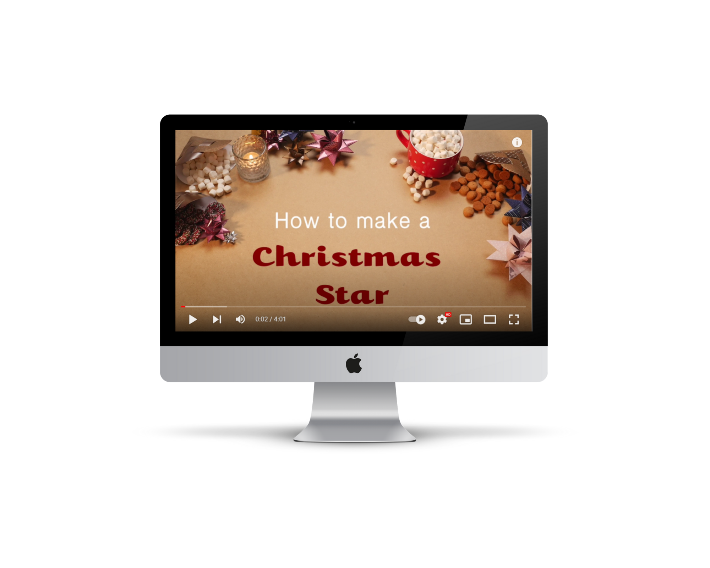

I skal i dette tema arbejde med hele processen bag det at producere en video: idéudvikling, projektstyring, optagelse, postproduktion, eksport. I vil blive introduceret til grundelementer indenfor video, samt oplært i enkel redigering af billede og lyd (Adobe After Effects, Premiere pro og Audition). Derudover vil I blive introduceret for alment anvendt videoudstyr.
Videoen skal afleveres til Kenneth Gabriel Nielsen (keni@zealand.dk) i filformatet .mp4 (codec H264). Eksporter i min. fuld HD (1920x1080) kvalitet. Brug wetransfer.com til forsendelse.

Se Video Her